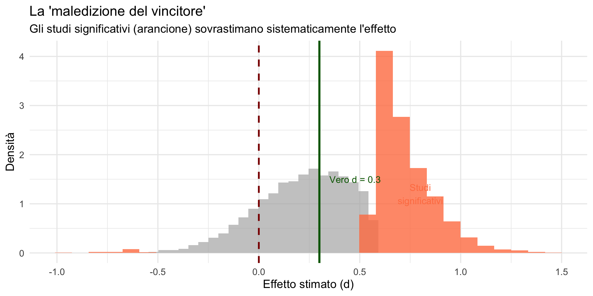
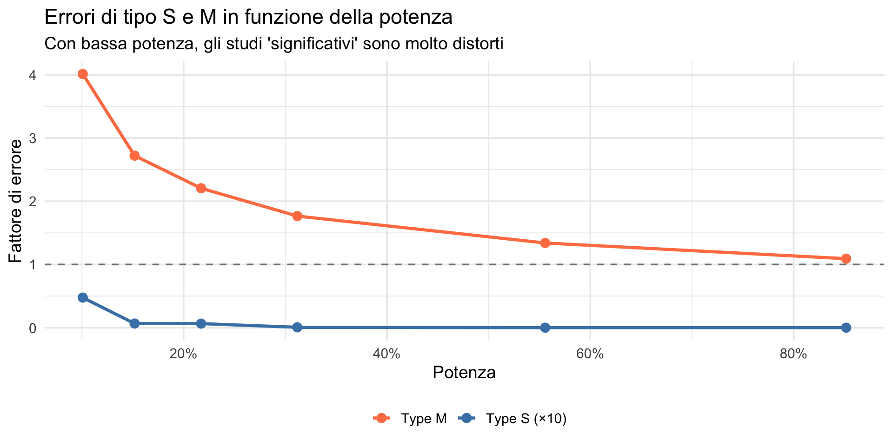
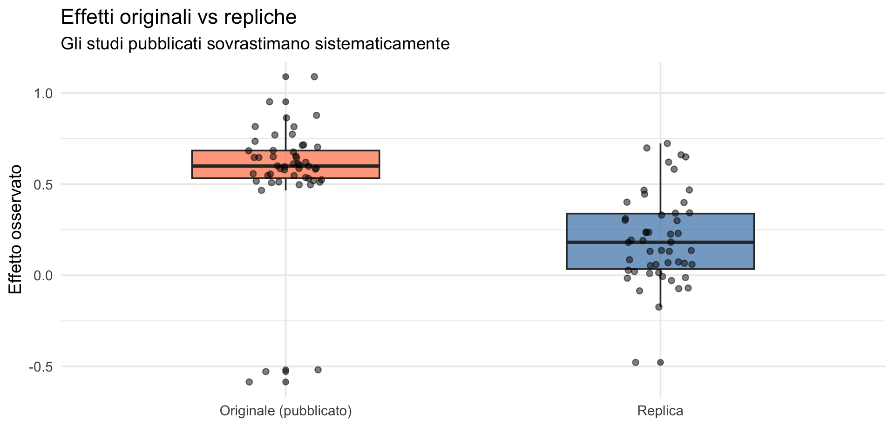

![]()
# Parametri
effetto_vero <- 0.3 # Effetto piccolo (d = 0.3)
n_per_gruppo <- 25 # Campione tipico in psicologia
n_simulazioni <- 10000
alpha <- 0.05
# Simuliamo molti studi
risultati <- replicate(n_simulazioni, {
# Generiamo dati
gruppo1 <- rnorm(n_per_gruppo, mean = 0, sd = 1)
gruppo2 <- rnorm(n_per_gruppo, mean = effetto_vero, sd = 1)
# Test t
test <- t.test(gruppo2, gruppo1)
# Effetto stimato (d di Cohen approssimato)
d_stimato <- (mean(gruppo2) - mean(gruppo1)) /
sqrt((var(gruppo1) + var(gruppo2)) / 2)
c(p = test$p.value, d = d_stimato)
})
risultati_df <- data.frame(t(risultati))
names(risultati_df) <- c("p_value", "d_stimato")Il valore-\(p\) e l’intervallo di confidenza
Cosa dicono davvero — Segmento 2
13 febbraio 2026
Dove eravamo
Parte 1: abbiamo visto
- cosa il p-value è (e cosa non è);
- la logica del test di ipotesi;
- gli errori di Tipo I (α) e Tipo II (β);
- il problema della bassa potenza.
Parte 2: vedremo:
- errori di tipo S (segno) e tipo M (magnitudine);
- perché i risultati significativi sono spesso esagerati;
- il legame con la crisi della replicabilità;
- cosa tutto questo implica per il vostro lavoro futuro.
Parte 1: oltre Tipo I e Tipo II
I limiti della classificazione tradizionale
La classificazione basata sugli errori di Tipo I e di Tipo II ci fornisce solo queste informazioni:
- Errore di Tipo I: affermare che esiste un effetto quando in realtà non c’è.
- Errore di Tipo II: concludere che non c’è un effetto quando invece esiste.
Cosa manca
Tuttavia, questa classificazione non considera due aspetti cruciali:
- Qual è la dimensione reale dell’effetto che sto stimando?
- Ho almeno colto la direzione corretta (positiva o negativa)?
In altre parole: anche quando rifiutiamo \(H_0\) e l’ipotesi nulla è effettivamente falsa, la nostra stima dell’effetto può essere gravemente distorta — sia nella grandezza che nel segno.
Errori di Tipo S e Tipo M (Gelman & Carlin, 2014)
Per superare questi limiti, Andrew Gelman e John Carlin hanno proposto due nuove categorie di errore:
Definizioni
Errore di Tipo S (Sign): stimare l’effetto nella direzione opposta a quella reale.
Errore di Tipo M (Magnitude): sovrastimare sistematicamente l’ampiezza dell’effetto.
Questi errori sono particolarmente frequenti quando la potenza statistica è bassa — una condizione purtroppo comune nella ricerca psicologica.
Perché è importante distinguerli?
Supponi di ottenere un risultato “significativo” (\(p < .05\)).
La domanda convenzionale è: “Potrebbe essere un falso positivo?”
Ma altrettanto rilevanti sono:
- “Ho almeno indovinato il segno dell’effetto?” (Tipo S)
- “La mia stima è vicina al valore vero?” (Tipo M)
Un esempio intuitivo
Studio: valutare l’effetto di un training di memoria negli anziani.
- Effetto reale nella popolazione: +3 punti (piccolo, ma presente).
- Lo studio condotto ha bassa potenza statistica (\(n = 20\) per gruppo).
Il risultato è “significativo”: +12 punti (\(p = .03\)).
Avviso
Hai trovato un effetto, ma lo stai sovrastimando di 4 volte!
Se il risultato fosse stato –8 punti (\(p = .04\)), avresti addirittura invertito la direzione dell’effetto reale.
Perché questo è rilevante nella pratica clinica
Immaginate di leggere su una rivista scientifica che un intervento produce un miglioramento di 12 punti.
Convinti dall’evidenza, lo adottate nella vostra pratica quotidiana.
Peccato che l’effetto reale sia di soli 3 punti. I vostri pazienti non sperimenteranno mai i benefici promessi — e voi vi chiederete perché “con i miei pazienti non funziona”.
Perché questo è rilevante nella pratica clinica
Questo non è un esercizio teorico. È ciò che è accaduto in molti ambiti della psicologia clinica e delle scienze sociali, quando i tentativi di replicare gli studi originali hanno restituito effetti molto più piccoli — o nulli.
Parte 2: la matematica degli errori S e M
Simuliamo uno scenario realistico
Potenza di questo studio
Potenza dello studio: 18 %Con potenza del ~17%, la maggior parte degli effetti reali non sarà rilevata.
Ma cosa succede quando otteniamo \(p\) < .05?
L’effetto vero è 0.3.
p_value d_stimato
1 0.652262920 -0.128335151
2 0.417600847 0.231278228
3 0.296340934 0.298766361
4 0.319099729 0.284791509
5 0.039427200 0.599143639
6 0.078398443 0.509085571
7 0.428315958 0.225983235
8 0.025031204 0.654773811
9 0.030395089 0.631027972
10 0.765628883 0.084876187
11 0.980253256 0.007038582
12 0.068143457 0.527814025
13 0.981420336 -0.006621328
14 0.349315699 -0.267357001
15 0.459423000 0.210971212
16 0.354843309 0.264265146
17 0.828708840 0.061557870
18 0.035786397 0.615626927
19 0.969186008 0.010983129
20 0.583379777 0.156187327
21 0.924934080 -0.026800819
22 0.856228370 0.051522494
23 0.558168883 0.166789318
24 0.674345582 0.119585047
25 0.238471435 0.338111537
26 0.005099360 0.833431916
27 0.902756808 0.034741219
28 0.104159774 0.468514210
29 0.115650328 0.453306553
30 0.032798416 0.623298500
31 0.760877013 -0.086570105
32 0.779806440 0.079528446
33 0.128561879 0.437423295
34 0.133405430 0.432321488
35 0.361662178 -0.260498916
36 0.392864110 0.243867435
37 0.290499668 0.302618996
38 0.615934769 0.142833914
39 0.971815960 -0.010047826
40 0.221038077 -0.350845880
41 0.072659820 0.519146219
42 0.905457147 0.033771812
43 0.061388625 0.547400019
44 0.580050293 -0.157582378
45 0.645946073 0.130767499
46 0.192965659 0.373468574
47 0.117627532 0.450901516
48 0.939328634 0.021643195
49 0.157513583 0.406536845
50 0.292458354 0.301167575
51 0.243875825 -0.334179836
52 0.036139515 0.611104308
53 0.894822774 -0.037623461
54 0.094532184 0.482530909
55 0.460931770 0.210259012
56 0.808934593 0.068779364
57 0.314696390 -0.287893409
58 0.094444017 0.483155260
59 0.782645715 0.078470031
60 0.745742723 0.092256285
61 0.017747330 0.694487630
62 0.856991573 0.051249568
63 0.715775715 0.103642280
64 0.563145214 0.164683889
65 0.327653365 -0.279956145
66 0.070654675 0.522959758
67 0.804272170 0.070487619
68 0.996581127 0.001218292
69 0.023294014 0.663031518
70 0.171445654 0.392684737
71 0.309020463 0.291453606
72 0.628447192 -0.137765854
73 0.627630345 -0.138084242
74 0.343943633 0.270434561
75 0.043540962 0.586764838
76 0.597715209 0.150256044
77 0.173493990 0.390983302
78 0.060033882 0.545302478
79 0.493319496 -0.195322391
80 0.644394869 0.131393360
81 0.027631534 0.642557245
82 0.006688339 0.801841173
83 0.089576283 0.490889032
84 0.093818138 0.483643125
85 0.031249619 0.628384022
86 0.199118121 0.368276153
87 0.652941208 0.127991748
88 0.826936506 0.062177748
89 0.037557584 0.605202339
90 0.096440561 0.479772862
91 0.044013160 0.585727290
92 0.348223524 0.268102175
93 0.406870682 0.236798200
94 0.002865285 0.891667649
95 0.045490530 0.580879138
96 0.101232899 0.473956204
97 0.953711373 -0.016508993
98 0.034709590 0.614911471
99 0.093389095 0.484173711
100 0.069633973 0.527953077Filtriamo solo i risultati “significativi”
Abbiamo ottenuto
su n_simulazioni = 10,000 studi indipendenti (ripetizioni dell’esperimento casuale).
La percentuale è il
percento.
Errore di Tipo M: sovrastima dell’effetto
Di quanto sovrastimiamo l’effetto negli studi significativi?
La media degli effetti \(d\) “statisticamente significativi” è 0.7.
Il fattore di esagerazione (Type M error): 2.4 volte.
Avviso
Gli studi significativi sovrastimano l’effetto di circa 2.4 volte!
Errore di Tipo S: direzione sbagliata
Quanti studi significativi hanno il segno sbagliato?
Studi significativi con segno sbagliato: 21.
Proporzione (Type S error): 1.2%.
Avviso
Anche se l’effetto reale è positivo, circa il 1% degli studi significativi trova un effetto negativo!
Visualizziamo la distribuzione degli effetti stimati

La domanda naturale è:
degli studi “statisticamente significativi” di questa simulazione, quanti hanno stimato in maniera corretta (diciamo \(\pm\) 20%) l’effetto reale?
Risposta:
NESSUNO.
Perché succede? La “maledizione del vincitore”
Con bassa potenza, per ottenere \(p\) < .05 serve un effetto osservato grande.
Ma l’effetto osservato = effetto vero + rumore casuale.
Per superare la soglia di significatività con un effetto vero piccolo, il rumore deve essere a tuo favore.
→ Gli studi “vincenti” sono quelli con il rumore più favorevole.
→ Di conseguenza, sovrastimano sistematicamente l’effetto reale.
Il meccanismo in sintesi
Pensatela così: se l’effetto vero è piccolo e il campione è piccolo, la maggior parte delle volte il test non raggiungerà la significatività. Le uniche volte in cui la raggiunge sono quelle in cui il rumore casuale ha gonfiato la stima. Quindi, per definizione, i risultati significativi con bassa potenza sono quelli con il rumore più favorevole — e quindi le stime più esagerate.
Questo non è un difetto del singolo studio: è una proprietà matematica della procedura. Chiunque usi piccoli campioni per cercare effetti piccoli produrrà stime esagerate quando ottiene risultati significativi.
Il legame con la potenza

La tabella riassuntiva
| n per gruppo | Potenza | Type M (esagerazione) | Type S (prob. segno sbagliato) |
|---|---|---|---|
| 10 | 0.10 | 4.01 | 0.05 |
| 20 | 0.15 | 2.72 | 0.01 |
| 30 | 0.22 | 2.21 | 0.01 |
| 50 | 0.31 | 1.77 | 0.00 |
| 100 | 0.56 | 1.34 | 0.00 |
| 200 | 0.85 | 1.09 | 0.00 |
Con \(n\) = 20 (comune in psicologia): esageri di ~3 volte e sbagli il segno nel ~1% dei casi.
Con \(n\) = 10: l’esagerazione supera le 4 volte.
Questi numeri dovrebbero far riflettere chiunque pianifichi uno studio con campioni piccoli.
Parte 3: il legame con la crisi di replicabilità
Open Science Collaboration (2015)
Nel 2015, un team di 270 ricercatori ha replicato 100 studi di psicologia.
Risultati:
- Solo 36% delle repliche ha ottenuto \(p\) < .05.
- Gli effetti nelle repliche erano in media la metà di quelli originali.
Perché gli effetti si “restringono”?

Il ciclo vizioso
- Bassa potenza statistica → la maggior parte degli studi non raggiunge la significatività (\(p < .05\)).
- Pubblicazione selettiva → solo i risultati “significativi” vengono pubblicati (publication bias).
- Sovrastima sistematica → per superare la soglia nonostante la bassa potenza, gli effetti pubblicati sono gonfiati (Errore di Tipo M).
- Replica fallimentare → gli studi di replica, non soggetti allo stesso filtro, stimano effetti molto più piccoli.
- Diagnosi errata → si conclude che “lo studio non si replica” — ma il problema era già nella progettazione iniziale.
Questo ciclo vizioso è ora sotto i vostri occhi
Osservate come ogni passaggio richiami un concetto che abbiamo affrontato oggi:
la potenza statistica (Parte 1), la maledizione del vincitore (Parte 2), il filtro del \(p\)-value e gli errori di Tipo S e M.
La crisi della riproducibilità non è un mistero.
È la conseguenza prevedibile — e in larga parte matematicamente inevitabile — dell’uso combinato di campioni piccoli, soglie binarie e pubblicazione selettiva.
Gli strumenti concettuali per riconoscerla li avete acquisiti oggi.
Un esempio concreto: ego depletion
Ego depletion: l’autocontrollo è una risorsa limitata che si esaurisce (Baumeister & Vohs, 2007).
- Meta-analisi originale (Hagger et al., 2010): d = 0.62 (effetto medio-grande).
- Replica pre-registrata (n = 2000+) (Hagger et al., 2016): d = 0.04 (praticamente zero).
L’effetto originale era 15 volte più grande della replica.
Questo è un caso estremo di errore di Tipo M amplificato dal publication bias: decine di piccoli studi hanno raggiunto la significatività solo quando il rumore casuale gonfiava la stima e solo quelli sono stati pubblicati.
Le conseguenze per il vostro lavoro futuro
Come ricercatori: i risultati pubblicati non sono stime affidabili degli effetti. Per progettare studi che producano risultati replicabili, servono campioni adeguati e pre-registrazione delle analisi.
Come clinici: non fidatevi ciecamente degli effect size riportati nella letteratura. Aspettatevi che i trattamenti funzionino meno bene di quanto indicato dagli studi originali — specialmente se basati su campioni piccoli.
Come lettori critici della letteratura: quando leggete “\(p < .05\)”, chiedetevi sempre qual era la potenza dello studio. Se la potenza era bassa e l’effetto riportato è grande, la stima è probabilmente esagerata.
Parte 4: quiz interattivo
Metti alla prova la tua comprensione
Per ciascuna affermazione, decidi: VERO o FALSO?
Domanda 1
“Un valore-\(p\) di 0.001 indica un effetto più grande di un valore-\(p\) di 0.04.”
FALSO
Il valore-\(p\) dipende anche da \(n\). Lo stesso effetto può produrre valori-\(p\) molto diversi a seconda della dimensione campionaria.
Domanda 2
“Se il mio studio ha potenza del 30% e trovo \(p\) < .05, probabilmente sto sovrastimando l’effetto.”
VERO
Con bassa potenza, i risultati significativi tendono a essere esagerati (Type M error). Con potenza del 30%, l’esagerazione media è di circa 2-3 volte.
Domanda 3
“Un risultato con \(p\) = 0.049 è fondamentalmente diverso da uno con \(p\) = 0.051.”
FALSO
La differenza è minima. La dicotomia significativo/non significativo è arbitraria. Come hanno scritto Gelman e Stern (2006): “La differenza tra ‘significativo’ e ‘non significativo’ non è essa stessa statisticamente significativa.”
Domanda 4
“Se trovo \(p\) < .05, ho il 95% di probabilità di replicare il risultato.”
FALSO
La probabilità di replicare dipende dalla potenza e dall’effetto reale, non dal valore-\(p\).
Domanda 5
“L’errore di Tipo S è particolarmente problematico quando la potenza è alta.”
FALSO
L’errore di Tipo S è problematico quando la potenza è bassa. Con alta potenza, se trovi un effetto significativo, quasi certamente hai il segno giusto.
Domanda 6
“Un intervallo di confidenza al 95% che non include lo zero equivale a \(p\) < .05.”
VERO (per test a due code)
IC e valore-\(p\) danno informazioni equivalenti sulla “significatività”, ma l’IC fornisce anche informazioni sulla grandezza plausibile dell’effetto. Per questo l’IC è generalmente preferito al solo valore-\(p\).
Riepilogo
Il percorso fin qui
Lezioni 5-11 — Probabilità, distribuzioni, valore atteso, covarianza.
Lezione 12 — Verosimiglianza: come i dati parlano dei parametri.
Lezione 14 — Distribuzione campionaria, errore standard, intervallo di confidenza.
Lezione 15 (oggi) — Il valore-\(p\), errori S e M, crisi di riproducibilità.
Il percorso fin qui
Avete ora un quadro completo dell’inferenza frequentista: cosa fa, come funziona, e quali sono i suoi limiti strutturali. Avete anche visto come questi limiti hanno contribuito alla crisi di riproducibilità in psicologia. Nella prossima lezione vedremo le cattive pratiche che amplificano ulteriormente questi problemi. Poi saremo pronti per l’inferenza bayesiana, che offre un’alternativa concettualmente diversa.
I punti chiave di oggi
Il valore-p non è la probabilità che \(H_0\) sia vera, né che il risultato sia “dovuto al caso”.
Errori di Tipo S e M: con bassa potenza, gli studi significativi spesso sbagliano direzione o esagerano l’effetto.
La “maledizione del vincitore”: per superare la soglia con un effetto vero piccolo, serve rumore favorevole.
La crisi di replicabilità è in parte spiegata da questi fenomeni.
Servono campioni più grandi, pre-registrazione e strumenti statistici che rispondano direttamente alle domande dei ricercatori.
Implicazioni per la ricerca psicologica
Cosa evitare
- Campioni troppo piccoli
- Pubblicare solo \(p\) < .05
- Interpretare \(p\) come “probabilità dell’ipotesi”
- Confondere significatività e importanza
Cosa fare
- Calcolare la potenza a priori
- Pre-registrare ipotesi e analisi
- Riportare effect size e IC
- Usare l’approccio bayesiano
Prossima lezione
La crisi di replicabilità e le cattive pratiche
- p-hacking: manipolare i dati per ottenere \(p\) < .05.
- HARKing: ipotesi formulate dopo aver visto i risultati.
- Garden of forking paths: le decisioni invisibili.
- Open Science: pre-registrazione, dati aperti, repliche.
Per approfondire
Letture fondamentali:
Gelman, A., & Carlin, J. (2014). Beyond power calculations: Assessing Type S (sign) and Type M (magnitude) errors. Perspectives on Psychological Science.
Wasserstein, R. L., & Lazar, N. A. (2016). The ASA statement on p-values. The American Statistician.
Button, K. S., et al. (2013). Power failure: Why small sample size undermines the reliability of neuroscience. Nature Reviews Neuroscience.
Materiali del corso
Una citazione finale
“The difference between ‘significant’ and ‘not significant’ is not itself statistically significant.”
— Gelman & Stern (2006)
La prossima volta che leggete “\(p\) = 0.049, quindi significativo” e “\(p\) = 0.051, quindi non significativo” nello stesso articolo — o nella stessa tesi di laurea — avete gli strumenti per capire che qualcosa non va.
Bibliografia
Baumeister, R. F., & Vohs, K. D. (2007). Self-Regulation, ego depletion, and motivation. Social and personality psychology compass, 1(1), 115–128.
Hagger, M. S., Chatzisarantis, N. L., Alberts, H., Anggono, C. O., Batailler, C., Birt, A. R., Brand, R., Brandt, M. J., Brewer, G., Bruyneel, S., et al. (2016). A multilab preregistered replication of the ego-depletion effect. Perspectives on Psychological Science, 11(4), 546–573.
Hagger, M. S., Wood, C., Stiff, C., & Chatzisarantis, N. L. (2010). Ego depletion and the strength model of self-control: a meta-analysis. Psychological Bulletin, 136(4), 495–525.